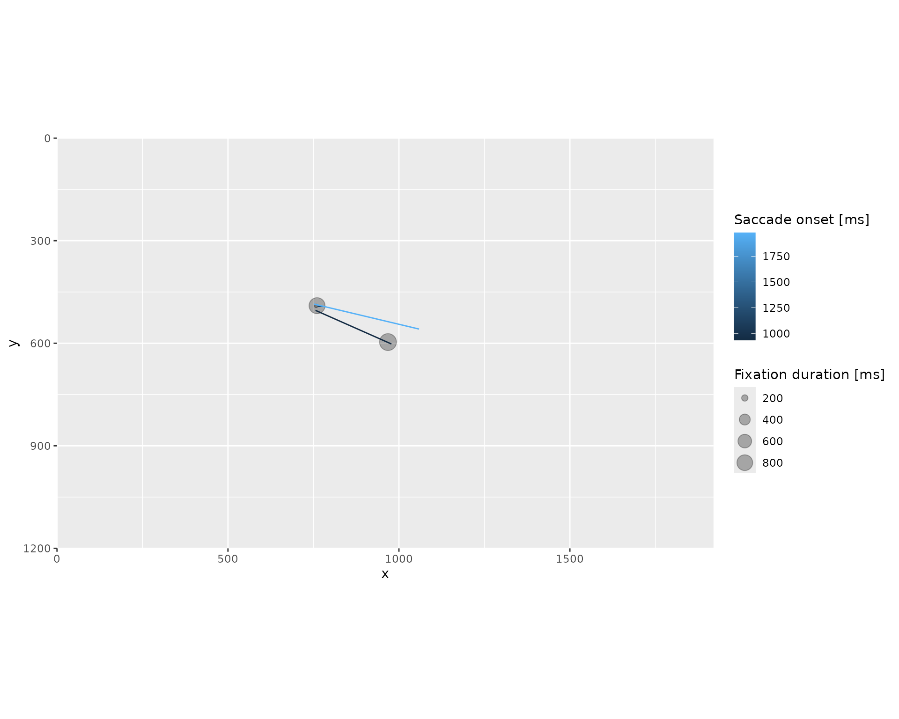

The package provides basic plotting functionality via function that uses ggplot2 as a back end. This means that you can extend the plot by adding further layers and geoms. Below is the basic code that shows how to use ggplot2 to generate a custom plot replicating the .
library(eyelinkReader)
#> Loading required package: RcppProgress
#> Loading required package: rlang
#> Failed to compile EDF API interface, please read installation instructions.
library(ggplot2)
data(gaze)
# extracting fixations and saccades for the first trial
fixations <- gaze$fixations[gaze$fixations$trial == 1, ]
saccades <- gaze$saccades[gaze$saccades$trial == 1, ]
ggplot() +
# enforce same scaling, as on the screen
coord_equal(expand=FALSE) +
# define screen limits and INVERSE y-axis to match Eyelink
scale_x_continuous(name = "x", limits = gaze$display_coords[c(1, 3)]) +
scale_y_reverse(name = "y", limits = gaze$display_coords[c(4, 2)]) +
# draw fixations as circles
geom_point(data = fixations, aes_string(x = "gavx", y = "gavy", size = "duration"), alpha=0.3) +
# draw saccades as line segments
geom_segment(data = saccades, aes_string(x = "gstx", y = "gsty", xend = "genx", yend = "geny", color = "sttime_rel")) +
# better legend titles
labs(size = "Fixation duration [ms]",
color = "Saccade onset [ms]")